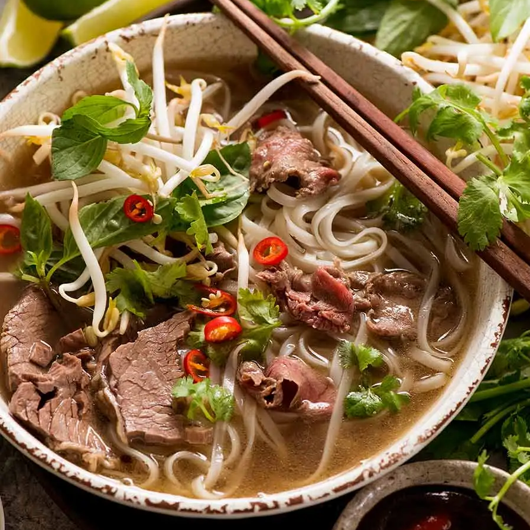

Pho
Back to Homepage

Description
Pho is a soup consisting of bone broth, rice noodles, thinly-sliced meat (in this recipe, it's beef), and fresh garnishes. It is believed to have been created in northern Vietnam in the early 20th century.
Ingredients
- Beef Soup Bones: Use the shank and knee to make the homemade bone broth.
- Rice Noodles: You should be able to find dry rice noodles at most grocery stores, either in the international aisle or another pantry aisle.
- Beef: This recipe calls for beef top sirloin. Make sure it's thinly sliced so the hot broth can cook it.
- Fish Sauce: Fish sauce will give the pho a hint of salty, fishy flavor.
- Onion: Roast the onions for an extra depth of flavor.
- Spices and Seasonings: This recipe calls for ginger, star anise, and salt.
- Garnishes: Garnish your pho with cilantro, green onion, Thai basil, lime, hoisin sauce, sriracha, or anything else you like.
Steps
- Roast the beef bones and onions until the bones are browned and the onions are soft.
- Combine roasted beef bones, roasted onions, ginger, salt, star anise, fish sauce, and water in a large stockpot. Allow to simmer for 6 to 10 hours. Then, strain the broth into a new saucepan.
- Allow dry rice noodles to soak for 1 hour. While they're soaking, bring broth to a simmer.
- Cook the rice noodles in boiling water. Drain and add noodles to a bowl topped with sirloin, cilantro, green onion, and broth. Garnish with your desired toppings.